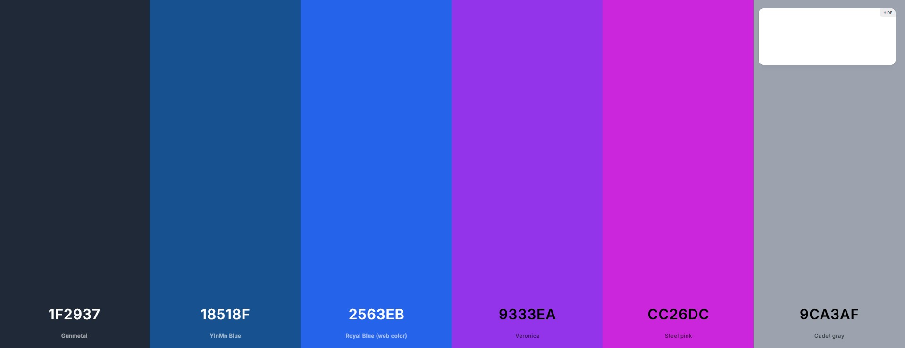
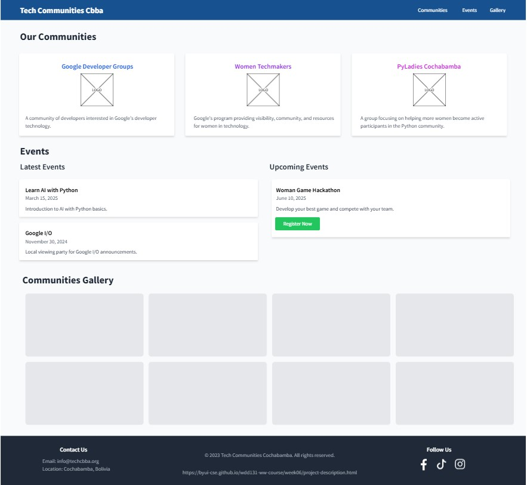
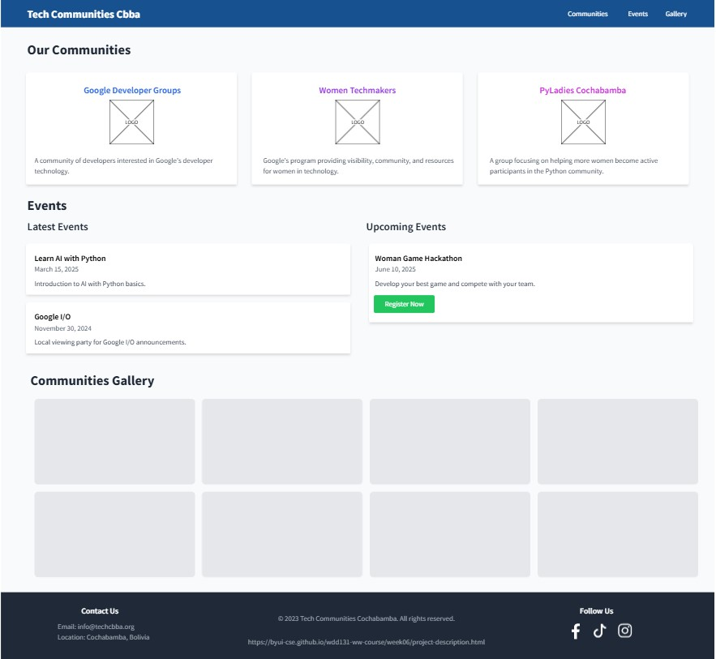

Site Name: Tech Communities Cochabamba
This name represents the key technology communities in Cochabamba, Bolivia, providing information on events, networking
opportunities, and resources for developers, tech enthusiasts, and aspiring professionals.
Optional Domain Availability: techcommunitiescbba.org
Site Purpose:
The website serves as a hub for the technology communities in Cochabamba, offering insights into Google Developer Groups
(GDG), Women Techmakers (WTM), and PyLadies Cochabamba. It provides:
- General information about each community
- Latest and upcoming event details
- Links to social media pages and resources
- A photo gallery showcasing past events
Scenarios:
- What is a tech community?
- How can I join a tech community in Cochabamba?
- What are the upcoming tech events in Cochabamba?
- How do these communities support beginners in technology?
Color Schema:
- Nav Bar Color: #18518f (Dark Blue) - Used for the navigation bar
- Nav Bar Text Color: #ffffff (White)
- Footer Color: #1f2937 (Dark Gray) - Used for the footer section
- Footer Text Color: #9ca3af (Gray)
- Community Colors:
- Google Developer Groups (GDG): #2563eb (Bright Blue)
- Women Techmakers (WTM): #9333ea (Purple)
- PyLadies Cochabamba: #cc26dc (Pink)
- Background Color: #f9fafb (Light Gray) - Used for the website background to enhance readability
- Text Color: #000000 (Black) - Used for body text for a clean and professional look

Typography:
Primary Font: Roboto - Used for all text elements, including headings, body, and accents to maintain consistency and
readability.
Wireframes:


 
